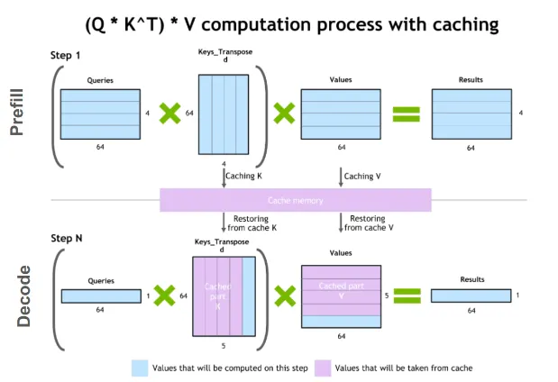
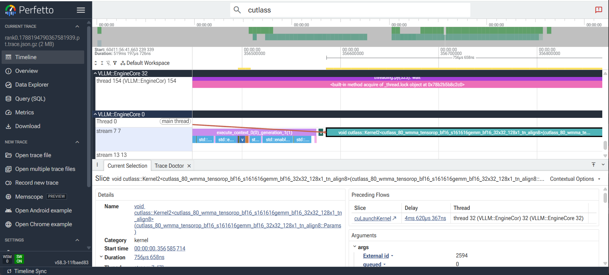
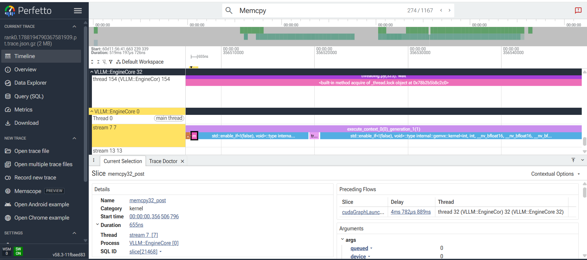
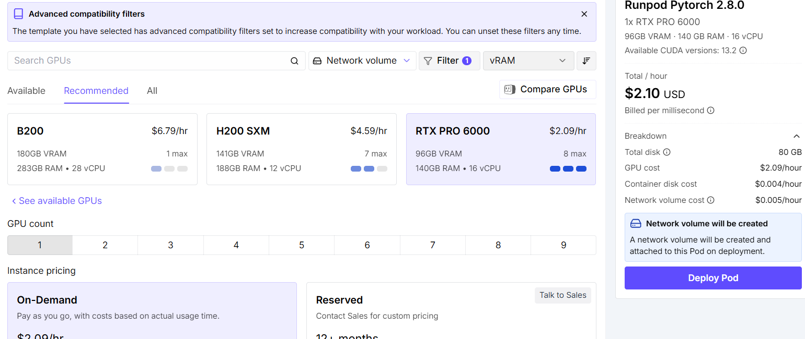

Learning outcomes
Scope
This module does not introduce a new CUDA programming model; it turns the previous modules into practical experiments for programmers who usually work with Python, PyTorch, and vLLM.
1. Applied GPU Inference: Performance, Capacity, and Cost
1.1 From Microbenchmarks to Real Workloads
Run examples/ch09/application_workload_benchmark to apply the measurement principles from M8 to a complete PyTorch workload instead of an isolated tensor operation. The script compares a device-resident microbenchmark with an application pipeline that includes input preparation, host-device transfers, model-like computation, and output handling.
.venv/bin/python examples/ch09/application_workload_benchmark/application_workload_benchmark.py
.venv/bin/python examples/ch09/application_workload_benchmark/application_workload_benchmark.py --device cuda --batch-size 512 --features 512 --outputs 512The program excludes warm-up iterations from its steady-state measurements and reports mean latency, p50, p95, p99, throughput, and average time for each pipeline stage. Repeat it with different batch sizes and use the stage means to identify whether computation, memory transfers, synchronization, or host-side preparation dominates. The optional --pinned flag adds pinned host memory to the application path; its preparation cost is included so that the result represents a real per-iteration decision rather than an artificially isolated transfer.
- Explain why the microbenchmark is faster or slower than the end-to-end application benchmark.
- Compare mean latency with
p95andp99to identify tail-latency effects. - Repeat with larger batches and determine whether fixed overhead is being amortized.
- Identify the dominant application stage and justify whether the next optimization should target computation, transfers, memory, or host orchestration.
- Compare pageable input with
--pinnedinput and include the pinning preparation cost in the decision.
Reference results on the course GPU
The following run was measured on an NVIDIA GeForce RTX 5060 Ti with PyTorch 2.13.0+cu130, using batch size 512, 512 input features, 512 outputs, 5 warm-up iterations, and 30 measured iterations:
| Workload | Mean | p50 | p95 | p99 | Throughput |
|---|---|---|---|---|---|
| Microbenchmark: compute only | 0.119 ms | 0.119 ms | 0.135 ms | 0.165 ms | 8,419.46 iter/s |
| Application: end-to-end pipeline | 2.740 ms | 2.512 ms | 3.225 ms | 3.420 ms | 364.90 iter/s |
The application pipeline is approximately 23 times slower than the compute-only microbenchmark because it includes CPU input preparation, host-to-device transfer, device-to-host transfer, synchronization, and result handling.
| Application stage | Mean |
|---|---|
| Input preparation | 0.598 ms |
| Host to device | 0.860 ms |
| Compute | 0.147 ms |
| Device to host | 1.116 ms |
In this run, device-to-host transfer and host-to-device transfer dominate the measured stages. These values are a reference output, not universal constants: they depend on the GPU, driver, process state, batch size, and system load.
1.2 PyTorch memory lab: why VRAM disappears
Use examples/ch09/pytorch_memory_lab to make PyTorch's CUDA caching allocator visible and connect VRAM behavior to batch-size decisions. The script observes torch.cuda.memory_allocated(), torch.cuda.memory_reserved(), tensor lifetime, peak memory, and out-of-memory behavior.
Allocated memory and reserved memory are different
torch.cuda.memory_allocated() reports memory currently used by live PyTorch tensors. torch.cuda.memory_reserved() reports GPU memory held by PyTorch's CUDA caching allocator, including unused blocks kept for later reuse. Therefore reserved memory is normally greater than or equal to allocated memory. Reserved CUDA memory is not pinned memory: reserved memory is device VRAM, while pinned memory is page-locked CPU host memory used for efficient transfers.
del and empty_cache() have different jobs
del x removes a Python reference. When no references keep the tensor alive, its storage becomes available for reuse by PyTorch, but the allocator may keep the block reserved. torch.cuda.empty_cache() releases unused cached blocks to the CUDA driver; it cannot free memory owned by live tensors, model parameters, or active library state. This is why freeing Python objects and returning cached memory are separate operations.
Batch-size limit
The second part runs result = batch @ weights, doubles the batch size after each successful run, and catches torch.cuda.OutOfMemoryError. The largest successful batch is an observation for that workload, GPU, data type, and process state, not a universal production setting. Real models also need memory for weights, activations, temporary workspaces, and caches, so the result must leave headroom.
- Track allocated and reserved memory during tensor creation, deletion, and
empty_cache(). - Find the largest successful batch for the matrix workload and compare its peak memory with the available VRAM.
- Explain why
memory_allocated()can fall whilememory_reserved()remains high. - Explain why the observed batch limit changes when matrix dimensions or the current process state changes.
Reference output: tensor lifecycle
This is the relevant portion of a run on an NVIDIA GeForce RTX 5060 Ti with PyTorch 2.13.0+cu130 and lifecycle size 1024. The table keeps only the counters needed to follow tensors a, b, and c:
| Program state | memory_allocated | memory_reserved |
|---|---|---|
| Initial state after empty_cache() | 0.00 MiB | 0.00 MiB |
| After creating a and b | 8.00 MiB | 20.00 MiB |
| After c = a @ b | 44.00 MiB | 52.00 MiB |
| After del a | 40.00 MiB | 52.00 MiB |
| After deleting b and c | 32.00 MiB | 52.00 MiB |
| After torch.cuda.empty_cache() | 32.00 MiB | 32.00 MiB |
The memory associated with a, b, and c is released when their last references disappear. The remaining 32 MiB is a process baseline kept by PyTorch or a CUDA library, such as an internal matrix-multiplication workspace. It is not cached memory from those three tensors, so empty_cache() cannot reduce it to zero.
1.3 Comparing classifiers on CPU and GPU: Random Forest, XGBoost, and an MLP
The earlier PyTorch benchmarks in M8 compared the same tensor operation on CPU and GPU. This exercise asks a sharper question: does "GPU helps" even mean the same thing for every model? Three classifier families are trained on the same dataset and measured the same way, and each one has a genuinely different relationship with the GPU. The dataset is scikit-learn's Covertype set: 581,012 rows, 54 features, 7 forest cover-type classes, real and large enough to make the comparison meaningful rather than a toy.
Random Forest (scikit-learn) builds independent trees from bootstrap samples — bagging — so in principle every tree can be grown at the same time; that is exactly why scikit-learn's own training already parallelizes across trees using CPU threads (n_jobs=-1). What it does not parallelize is the work inside one tree: scikit-learn finds each split with an exact-greedy search — scan the real values that reached this node, try every threshold, keep the best — a small, branchy, data-dependent computation with no CUDA kernel behind it in this library. That is a property of scikit-learn's implementation, not of Random Forest as an algorithm; see the callout below. Once the forest is trained, prediction is a different computation: walking a fixed set of nodes for many rows at once is regular and batchable, so that part is rewritten here as tensor operations and benchmarked on CPU and GPU.
XGBoost grows gradient boosted trees, and boosting has the opposite ensemble structure from bagging: tree N+1 is trained to correct the residual errors left by trees 0..N, so trees must be built strictly one after another — no amount of hardware parallelizes across boosting rounds. What XGBoost does accelerate is the work inside each tree: its histogram-based split method (tree_method="hist") bins feature values and finds splits by building and reducing per-feature histograms, a large, regular aggregation instead of many small branchy decisions, with real CUDA kernels behind it (device="cuda"). Each sequential boosting round still gets faster on a GPU, even though the rounds themselves cannot overlap. XGBoost is not built on PyTorch — it has its own CUDA kernels — but it is a realistic, widely used example of a GPU-trainable tree ensemble, so it earns a place in this comparison even though it steps outside PyTorch.
MLP, in pure PyTorch, is the textbook GPU-friendly workload already familiar from M8: forward and backward passes are dense matrix multiplications and elementwise operations, fully regular and data-parallel, so both training and inference can use the GPU.
Two different kinds of parallelism, not one
It is easy to collapse two separate questions into one. First: can the trees in the ensemble be built independently of each other? Bagging (Random Forest) says yes — every tree only needs its own bootstrap sample, so the trees are embarrassingly parallel across the ensemble. Boosting (XGBoost) says no — every tree needs the residuals produced by all earlier trees, so the trees are strictly sequential across the ensemble, on any hardware. On this axis, Random Forest is the more parallel structure, not the less parallel one — this is the point worth crediting before anything else.
Second, separate question: how is the best split found while growing one tree? This is where this exercise's GPU story actually comes from. scikit-learn's trees use exact-greedy search, which is small, sequential, and data-dependent, with no GPU kernel in scikit-learn. XGBoost's hist method reframes the same search as histogram construction and reduction, which is regular and vectorizable, and ships real CUDA kernels for it.
So the reason this exercise's Random Forest trains on CPU only is not "bagging cannot be parallelized" — it already is, across CPU threads. It is that scikit-learn's specific split-search algorithm has no GPU implementation. Proof that this is a library choice rather than a law: RAPIDS cuML ships a GPU-native RandomForestClassifier that uses histogram-based splits, exactly like XGBoost's hist method — and because bagging is also parallel across trees, a GPU Random Forest can combine both axes of parallelism at once, arguably an easier target for a GPU than boosting, which stays permanently serialized across rounds.
From trees to tensors: how the Random Forest inference works
A trained forest is exported into fixed-size tensors: for every tree, its feature, threshold, children_left, children_right, and per-leaf class distribution, padded to the largest tree's node count. Leaf nodes are given a self-loop — their children are rewritten to point back to themselves — so a fixed number of traversal steps (the forest's max_depth) is always enough: a sample that reaches its leaf early just keeps landing on the same leaf for the remaining steps, with no per-sample "done" bookkeeping needed. Each step gathers the current node's feature and threshold for every tree and every sample at once, compares it against the input, and moves every (tree, sample) pair to its next node as a single batched tensor operation. CPU and GPU run the exact same function; only the device differs.
The runnable example examples/ch09/classifier_gpu_benchmark implements all three models behind one --model {rf,xgboost,mlp,all} flag, sharing the same dataset loading and CPU/GPU timing helpers. --model rf also checks that the tensor-walk predictions match scikit-learn's own .predict() before trusting the timings.
| Model | Phase | Device | Time | Notes |
|---|---|---|---|---|
| Random Forest | train | CPU | 7022 ms | scikit-learn, no GPU path |
| Random Forest | inference | CPU | 1073 ms | tensor-walk, 46.6k rows/s |
| Random Forest | inference | GPU | 116 ms | tensor-walk, 431.7k rows/s, 9.3x |
| XGBoost | train | CPU | 9609 ms | hist method |
| XGBoost | train | GPU | 8268 ms | hist method, 1.16x |
| XGBoost | inference | CPU | 224 ms | 223.5k rows/s |
| XGBoost | inference | GPU | 76 ms | 660.1k rows/s, 2.95x |
| MLP | train | CPU | 558 ms | 5 epochs |
| MLP | train | GPU | 520 ms | 5 epochs, 1.07x |
| MLP | inference | CPU | 5.6 ms | 8.9M rows/s |
| MLP | inference | GPU | 8.1 ms | 6.2M rows/s, 0.69x — CPU wins |
On the course reference machine (RTX 5060 Ti), with the default --max-train-rows 200000 --max-test-rows 50000, three results stand out beyond the raw numbers. Random Forest inference is the clearest GPU win (about 9x): it is exactly the large, regular, batched workload the tensor-walk was designed to expose. XGBoost's GPU training speedup is modest at this size (1.16x) — histogram construction is GPU-friendly in principle, but at 200k rows and 200 shallow trees the CPU hist method is already efficient, so the crossover point depends on dataset size, tree count, and depth. The MLP is the one place the GPU loses, for inference specifically: the model and batch are too small to amortize CUDA launch and synchronization overhead, the same lesson M8's tensor benchmarks already taught, now showing up in a real classification workload instead of a matrix multiplication.
- Run
--model rfand confirmmatch_vs_sklearnis at or near100%before trusting any of the timings. - Run
--model xgboostand identify the one line in the code that decides whether training happens on CPU or GPU. - Run
--model mlpand explain why GPU inference can be slower than CPU inference here, using the same overhead argument from M8 1.6. - Explain, in your own words, why scikit-learn's Random Forest has no GPU training path while XGBoost does — and why that is a fact about the split-search algorithm each library implements, not about bagging being less parallel than boosting (bagging is the more parallel ensemble structure of the two).
- Re-run with
--max-train-rows -1to use the full training split and see whether XGBoost's GPU training speedup grows.
1.4 Tuning vLLM for concurrent inference
Use the vLLM Docker demo to study how a serving engine behaves when several clients submit requests at the same time. This is a server-configuration experiment, not model fine-tuning: the model weights remain unchanged while scheduler, memory, and batching parameters are varied. The objective is to find a useful compromise between throughput, latency, concurrency, and GPU memory use.
Requirements and container setup
Run vLLM in the official Docker image, so vLLM and its Python dependencies do not need to be installed on the host. The host still needs a working NVIDIA driver, Docker, and the NVIDIA Container Toolkit to expose the GPU to the container. Mount the Hugging Face cache to avoid downloading the model again on every run. A Hugging Face token is required for gated or private models.
bash examples/ch09/vllm_docker_demo/start_vllm.shThe prototype starts Qwen/Qwen3-0.6B with a 4096-token maximum sequence length and 80% GPU memory utilization, then waits for the health endpoint on port 8001 so it can coexist with the course website on port 8000. It exposes an OpenAI-compatible endpoint at http://localhost:8001/v1. See the vLLM Docker demo README for the complete setup.
Parameters to vary
When many clients are active, the most useful vLLM parameters are:
| Parameter | Principal effect |
|---|---|
--max-num-seqs | Maximum number of request sequences processed in one scheduler iteration. |
--max-num-batched-tokens | Maximum number of tokens processed in one scheduler iteration. |
--max-model-len | Maximum token length of a request; it strongly affects KV-cache capacity. |
--gpu-memory-utilization | Fraction of GPU memory assigned to the model executor and KV cache. |
--kv-cache-dtype | Precision of the KV cache, such as fp16 or fp8; lower precision can reduce memory use with possible quality or performance trade-offs. |
--enable-prefix-caching | Reuses KV-cache blocks for identical prompt prefixes, which is useful when requests share a system prompt. |
--enable-chunked-prefill | Splits long prompts into chunks so that one long prefill is less likely to block other requests. |
--tokenizer-pool-size | Number of worker processes used for CPU-side tokenization. |
--tensor-parallel-size | Splits the model across multiple GPUs; it is useful only when more than one GPU is available and introduces synchronization overhead. |
vLLM defines max_num_seqs as the maximum number of sequences processed in one iteration and max_num_batched_tokens as the maximum number of tokens processed in one iteration. If the KV cache is insufficient, requests can be preempted and recomputed, increasing end-to-end latency. The appropriate response may be to provide more cache memory or to reduce the number of concurrent sequences or batched tokens. See the vLLM scheduler documentation and the vLLM optimization guide.
Connect vLLM settings to CUDA concepts
vLLM parameters change the shape of the workload submitted to the GPU. They do not directly set CUDA block dimensions, register usage, or shared-memory allocation; those choices are made by the kernels used by vLLM, PyTorch, cuBLAS, and attention libraries. Nsight Systems and Nsight Compute let us observe how the changed workload affects the GPU.
| vLLM configuration or observation | CUDA concept to investigate |
|---|---|
Increase --max-num-seqs | Larger batches can expose more independent work, increase the number of active warps, and improve achieved occupancy and Tensor Core utilization. |
Increase --max-num-batched-tokens | Larger GEMM and attention operations can improve arithmetic intensity and amortize kernel-launch overhead. |
| Only a few tokens or one request | Small kernels may have low occupancy, few active warps, and a more visible launch and synchronization overhead. |
| Increase context length | More KV-cache data increases global-memory traffic and may change L2-cache reuse and DRAM pressure. |
| Autoregressive decode | Each step reads model weights and KV-cache data repeatedly; the workload can become memory-bound even when arithmetic work is modest. |
| Long prompt prefill | Large matrix operations can use tiled GEMM kernels, shared memory, registers, and Tensor Cores more effectively. |
Enable --enable-prefix-caching | Reusing a prompt prefix reduces repeated prefill computation and memory traffic, potentially improving cache reuse. |
Use --kv-cache-dtype fp8 | Fewer bytes reduce KV-cache capacity pressure and memory traffic, with possible numerical or kernel-support trade-offs. |
| Quantize model weights | Lower storage and traffic can help a memory-bound workload, but performance depends on the available quantized kernels and hardware support. |
| Use tensor parallelism | Work is distributed across GPUs, but synchronization and collective communication add overhead. |
Increasing concurrency does not directly set CUDA occupancy. It changes the number and shape of sequences presented to the scheduler. Larger scheduled batches can produce larger GEMM and attention kernels, giving the GPU more independent warps to execute and potentially improving occupancy and Tensor Core utilization. If the batches remain small, kernel-launch overhead and limited parallel work may leave many SM resources unused.
During prefill, long prompts create larger matrix operations. These operations can make better use of tiled GEMM kernels, shared memory, registers, and Tensor Cores. During decode, each step usually processes fewer new tokens and repeatedly reads model weights and KV-cache data. Decode can therefore become limited by global-memory traffic and memory bandwidth even when the arithmetic workload is relatively small.
Increasing context length or concurrency increases the amount of KV-cache data that must be stored and accessed. The KV cache is stored in GPU memory and managed in blocks by vLLM. Its access pattern affects DRAM traffic, L2-cache reuse, and memory latency. A configuration may have enough VRAM to run successfully but still show poor decode performance because the attention workload is memory-bound. For a step-by-step explanation of queries, keys, values, prefill, decode, and the new query at each decode step, see the KV-cache appendix. For a visual introduction to the mechanism, see The Secret Behind Fast LLM Inference: Unlocking the KV Cache.

Prefix caching can reduce repeated prefill computation and memory traffic when requests share the same prompt prefix. Chunked prefill changes how long prompt processing is divided across scheduler iterations, reducing the chance that one large prefill monopolizes the GPU. The profiler can show whether this improves GPU utilization or merely adds scheduling overhead.
Shared memory is relevant here, but it is not directly configured through the main vLLM serving parameters. It is an implementation resource used by individual CUDA kernels. Nsight Compute can show shared-memory loads and stores, achieved occupancy, warp stalls, DRAM throughput, L2 hit rate, Tensor Core utilization, register use, and shared memory used per block.
The objective is not to maximize occupancy in isolation. A kernel may have high occupancy and still be limited by memory bandwidth, while a lower-occupancy kernel may perform well if it uses Tensor Cores efficiently. The correct tuning decision combines application metrics with profiler metrics.
The relationship investigated by this exercise is:
vLLM parameters -> scheduler workload shape -> CUDA kernel dimensions -> occupancy, warps, and Tensor Cores -> cache and memory behavior -> latency and throughput

Experiment
Keep the model, prompts, maximum output length, and number of measured requests fixed. Restart the server for each configuration and compare at least these scheduler settings:
--max-num-seqs 1
--max-num-seqs 4
--max-num-seqs 8Repeat the comparison with:
--max-num-batched-tokens 512
--max-num-batched-tokens 1024
--max-num-batched-tokens 2048The client must submit requests concurrently rather than one after another. Use the demo client with a fixed request count and concurrency, for example:
.venv/bin/python examples/ch09/vllm_docker_demo/client.py --requests 8 --concurrency 4 --max-tokens 64For each configuration, record total token throughput, mean latency, p50, p95, p99, time to first token, inter-token latency, GPU utilization, VRAM use, and any preemption or out-of-memory events. Keep a table of the configuration and measurements.
The result is not a universally best value. On the course machine, the following short runs show the effect of constraining max_num_seqs below the client concurrency.
| Server setting | Client load | Throughput | Mean latency | p50 latency | p95 latency | p99 latency |
|---|---|---|---|---|---|---|
MAX_NUM_SEQS=4 | 8 requests, concurrency 4, 64 max tokens | 441.45 tokens/s | 516.26 ms | 516.44 ms | 657.82 ms | 658.44 ms |
MAX_NUM_SEQS=1 | 8 requests, concurrency 4, 64 max tokens | 165.81 tokens/s | 1252.93 ms | 1306.64 ms | 1583.31 ms | 1678.63 ms |
With the same client load, MAX_NUM_SEQS=1 reduces throughput by about 2.7x and increases mean and p95 latency by about 2.4x. This is the constrained case: the client keeps four requests active, but the scheduler is allowed to process only one sequence per iteration.
The purpose is to establish a cause-and-effect relationship:
more concurrency -> larger batches -> more parallel GPU work -> potentially higher throughput -> greater KV-cache use -> potentially higher latency or out-of-memory errorsDo not interpret --max-num-seqs as capacity that can be increased without cost. It is only an upper limit on how many active sequences vLLM may schedule together. If the value is too small for the client concurrency, requests are serialized and throughput drops. If the value is large enough for the workload, vLLM can form useful batches and keep the GPU busier. If the value is pushed far beyond what the GPU memory and workload can support, the bottleneck moves to KV-cache capacity, scheduler overhead, longer per-iteration work, tail latency, or out-of-memory failure.
max_num_seqs too low -> underfilled batches, queueing, poor throughput
max_num_seqs appropriate -> enough batching for the active workload
max_num_seqs too high -> more KV-cache pressure, possible latency or OOM problemsThe same reasoning applies to --max-num-batched-tokens. Larger token batches can improve arithmetic intensity and amortize launch overhead, but they also increase memory pressure and the time spent in one scheduler iteration. The tuning target is therefore not the largest number accepted by the command line; it is the smallest configuration that gives good throughput while still meeting the latency and memory constraints of the application.
- Identify the configuration with the highest total throughput.
- Identify the configuration that satisfies a chosen
p95latency target. - Explain whether the workload is limited by compute, memory, KV-cache capacity, scheduling, or CPU-side work.
- Explain why maximizing one metric can make another metric worse.
1.5 Choosing a model for the available GPU
Before starting a local LLM server, compare the model's memory requirements with the GPU that will run it. A model is not suitable merely because its raw weights fit in VRAM: inference also needs runtime workspaces, temporary buffers, and a KV cache for the active requests. This exercise develops a simple estimate and then validates it against the memory reported by vLLM.
What must fit in VRAM?
The first estimate is the weight size:
weight memory ≈ number of parameters × bytes per parameterFor example, Qwen3-0.6B has approximately 0.6 billion parameters. With BF16, each parameter uses 2 bytes:
0.6 billion × 2 bytes ≈ 1.2 GB ≈ 1.1 GiBThis is only the raw weight estimate. The complete inference footprint also includes the model runtime, CUDA and PyTorch workspaces, temporary buffers, tokenizer and scheduler state, and memory reserved for the KV cache. A practical decision therefore compares the sum of these components with the VRAM available after the operating system and other processes have been accounted for, while leaving a safety margin.
What is the KV cache?
During transformer inference, each attention layer produces key and value tensors for the tokens already seen in a request. These tensors are stored in the key-value cache, or KV cache, so the model does not have to recompute them at every generated token. This makes autoregressive decoding much faster, but the stored tensors consume GPU memory.
KV-cache use grows with the number of transformer layers, the number of key/value heads, the head dimension, the cache data type, the total number of tokens in the active sequences, and the number of concurrent requests. A simplified estimate is:
KV bytes ≈ 2 × layers × KV heads × head dimension
× bytes per cache value × active tokensThe factor 2 accounts for keys and values. In practice, vLLM manages this memory in blocks and also needs metadata, so the formula is an estimate. The important operational consequence is that a model can fit with one short request and still run out of memory when several clients use long contexts.
Model and GPU comparison
These are the values measured while preparing this course on an NVIDIA GeForce RTX 5060 Ti:
| Value | Measurement or estimate |
|---|---|
| GPU | NVIDIA GeForce RTX 5060 Ti |
| Total VRAM | 16,311 MiB, approximately 16 GB |
| VRAM already in use | 672 MiB |
| VRAM available before vLLM | 15,379 MiB |
| Model | Qwen3-0.6B, approximately 0.6 billion parameters |
| Weight data type | BF16, 2 bytes per parameter |
| Approximate raw weight size | 0.6B × 2 bytes ≈ 1.2 GB, approximately 1.1 GiB |
| vLLM KV cache observed at 80% utilization | 10.79 GiB |
| Configured max sequence length | 4,096 total tokens, including prompt and generated output |
| Estimated maximum concurrency at full sequence length | Approximately 24.67 requests if each request reaches 4,096 total tokens |
Qwen3-0.6B is therefore a comfortable choice for this GPU: its raw weights use only about 1.1 GiB, leaving room for the runtime and a substantial KV cache. The conclusion is based on the parameter count and data type, the actual free VRAM, the observed vLLM allocation, and a safety margin. It is not based on parameter count alone.
vLLM does not assign the whole requested GPU budget to the KV cache. With the launcher default --gpu-memory-utilization 0.80, vLLM first computes a target memory budget, then subtracts memory needed for model weights, non-PyTorch runtime state, peak activations, CUDA graphs, and other executor overhead. The remaining memory becomes available for the KV cache.
vLLM memory budget = total GPU memory × gpu_memory_utilization
KV-cache memory ≈ vLLM memory budget
- model weights and non-torch runtime memory
- peak activation memory
- CUDA graph memory
- executor overheadIn a representative startup log, vLLM reported a desired 80% budget of about 12.74 GiB, consumed memory of about 1.51 GiB for weights and non-torch state, 0.27 GiB for peak activations, 0.09 GiB for CUDA graphs, and about 10.96 GiB of KV cache in use. The exact value can move slightly between runs because free VRAM, CUDA graph capture, compilation choices, and process state can change.
Read the current value from the vLLM startup log:
docker logs m9-vllm-qwen | grep -iE "Available KV cache memory|GPU KV cache size|Maximum concurrency|Current kv cache memory"Here max_model_len is the maximum total sequence length for one request: prompt tokens plus generated output tokens. vLLM also reports the KV cache capacity in tokens and converts it into a maximum-concurrency estimate for that configured maximum sequence length:
GPU KV cache size: 102,624 tokens,
Maximum concurrency for 4,096 tokens per request: 25.05xThe calculation is:
maximum concurrency = total tokens available in the KV cache / max_model_len
102,624 / 4,096 = 25.05This is a pessimistic estimate at the configured maximum sequence length. Shorter requests consume fewer KV-cache tokens, so more requests can fit before the cache becomes the limiting resource.
For this exercise, --gpu-memory-utilization is the main parameter because it shows how the KV cache is derived from a total VRAM budget. vLLM also supports a more direct --kv-cache-memory setting, expressed in bytes, when the experiment needs a fixed KV-cache allocation instead of an automatically derived one.
What about memory bandwidth?
VRAM capacity answers whether the model and its active state fit. Memory bandwidth helps determine how quickly the GPU can move weights and KV-cache data during inference. Decode is often sensitive to memory movement because each generated token repeatedly reads model weights and attention state, while prefill can expose more matrix-multiplication parallelism and compute throughput. Thus, a model may fit in VRAM but still deliver poor latency if its workload is limited by bandwidth or if concurrency is too low to keep the GPU busy.
Being “already in the GPU” means that the data is in VRAM, not that it is permanently next to the CUDA cores. To perform the calculation, the GPU must repeatedly read weights and KV-cache entries from VRAM into its caches, shared memory, and registers. The model may be larger than the fast on-chip caches, so most of these reads cannot remain there between steps. During decode, one token is generated at a time: the GPU rereads the weights and the relevant attention state for each step. Prefill processes many prompt tokens together and usually exposes larger matrix multiplications, so it can make better use of the GPU’s compute throughput. Therefore, capacity tells us whether the model fits, while bandwidth tells us how quickly the fitting data can be supplied to the computation. This is bandwidth inside the GPU memory system, not necessarily PCIe or network bandwidth.
Exercise
For a candidate model and a target GPU, collect the parameter count, weight data type, total and currently free VRAM, supported maximum sequence length, and expected number of concurrent requests. Estimate the raw weight size, then reserve space for runtime allocations, KV cache, temporary workspaces, and a safety margin. Start vLLM with conservative values such as --max-model-len 4096 and --gpu-memory-utilization 0.80, and compare the estimate with the startup log.
- Explain why Qwen3-0.6B fits comfortably on the course RTX 5060 Ti.
- Repeat the calculation for a larger model or a different data type.
- Explain how increasing context length or concurrent requests changes KV-cache use.
- Distinguish a capacity problem, where the model does not fit, from a bandwidth or throughput problem, where it fits but responds too slowly.
- Record the model, GPU, maximum sequence length, utilization limit, available KV cache, and observed concurrency so that another machine can reproduce the decision.
1.6 From capacity to bottleneck diagnosis
Exercise 1.5 answers the capacity question: how much VRAM is available, how much is assigned to the vLLM executor, how much remains for the KV cache, and how many full-length sequences could fit if each request reached max_model_len. This section uses the same facts to answer a different question: if the model fits, why can inference still be slow?
Capacity is not performance
A run can have enough KV-cache memory and still produce poor latency or throughput. Capacity tells whether the active sequences can fit. Performance depends on the shape of the scheduled work: how many sequences advance together, how many tokens are batched in one scheduler iteration, whether the GPU sees large GEMM and attention kernels, and how much decode work repeatedly reads model weights and cached K/V tensors.
fits in VRAM
-> necessary condition
-> not proof of good throughput or latency| Observation | Likely interpretation | Evidence to collect |
|---|---|---|
| Enough KV cache, but low throughput | The scheduler may be forming small batches or advancing too few sequences. | Compare MAX_NUM_SEQS=1, 4, and default; inspect execute_context ranges in Perfetto. |
| High p95 or p99 latency with no failures | Requests are queueing or waiting behind long decode work. | Use the client latency percentiles and compare against the configured concurrency. |
| Many small repeated decode ranges | Autoregressive generation is advancing token by token with limited batching. | Search Perfetto for execute_context, flash_fwd, and reshape_and_cache. |
| Large prefill range followed by many decode ranges | The prompt is processed as a larger matrix workload, then generation becomes sequential. | Compare the first generation range with later repeated ranges. |
Memcpy ranges are much shorter than compute ranges | Host-device transfer is probably not the main bottleneck for this run. | Search for Memcpy and compare its duration with cutlass and attention kernels. |
| Profiler stop takes a long time | The trace flush is profiler overhead, not model inference. | Look for Buffer Flush and keep profiled runs short. |
The two scheduler runs from 1.4 show this diagnostic workflow. With MAX_NUM_SEQS=4, the client concurrency matches the scheduler limit and the measured throughput was 441.45 tokens/s. With MAX_NUM_SEQS=1, the same client load fell to 165.81 tokens/s and p95 latency rose from 657.82 ms to 1583.31 ms. The model still fit in memory; the failure was not capacity. The restricted scheduler serialized too much of the concurrent workload.
Connect the 1.5 log to the profiler
The vLLM startup log may report enough KV-cache capacity for roughly 25 full-length 4096-token sequences. That does not mean every scheduler configuration will run well. If max_num_seqs is set to 1, vLLM is allowed to advance only one sequence per scheduler iteration even though the KV cache could hold many more. The profiler should therefore be interpreted together with the startup log: one tells what fits, the other shows how the fitted work actually runs.
Use this minimal diagnosis sequence:
docker logs m9-vllm-qwen | grep -iE "Available KV cache memory|GPU KV cache size|Maximum concurrency"
.venv/bin/python examples/ch09/vllm_docker_demo/client.py --requests 8 --concurrency 4 --max-tokens 64
.venv/bin/python examples/ch09/vllm_docker_demo/client.py --requests 8 --concurrency 4 --max-tokens 64 --profileOpen the trace in Perfetto and search for execute_context, cutlass, flash_fwd, reshape_and_cache, Memcpy, and Buffer Flush. The goal is not to find one bad kernel. The goal is to connect application metrics to a timeline shape: underfilled batches, repeated decode work, memory traffic from KV-cache access, or profiler overhead.
- Start from the 1.5 startup log and record available KV-cache memory, KV-cache token capacity, and maximum concurrency at full sequence length.
- Run the same client load with a normal scheduler setting and with a deliberately restricted setting such as
MAX_NUM_SEQS=1. - Compare throughput, mean latency, p95, and p99 before opening a profiler trace.
- Capture one short trace for each configuration and compare the shape of
execute_contextranges. - Explain whether the slow case is a capacity problem, a batching/scheduling problem, a decode memory-traffic problem, transfer overhead, or profiler overhead.
1.7 Cost model: rent, buy, or use an API
The previous exercises measured whether the model fits, how much KV cache is available, and how scheduler settings change throughput and latency. This section turns those measurements into an economic model. It separates three deployment choices: rent a GPU for a fixed hourly rate, buy a workstation and amortize it over time, or call a hosted API that bills input and output tokens separately.
1.7.1 Rental: pay for a GPU by the hour
Prices used in this example
GPU prices change quickly, so refresh them before making a real purchase or deployment decision. As a reference snapshot on 31 August 2026, RunPod listed RTX 4090 pods at $0.74/hr and H100 PCIe at $2.89/hr. Sources: RunPod GPU pricing and RunPod RTX 4090 rental page.

For a GPU rental, compare cost per 1M generated tokens:
tokens_per_hour = measured_tokens_per_second × 3600 × productive_utilization
cost_per_1M_output_tokens = hourly_price / tokens_per_hour × 1,000,000productive_utilization accounts for billed time in which the GPU is allocated but idle. Apply the formula to the measured Qwen3-0.6B run:
Measured run: Qwen/Qwen3-0.6B
Generated tokens: 51,200
Throughput: 634.64 tokens/s
Tokens per active hour: 634.64 × 3600 = 2,284,704| Rental scenario | Hourly cost | Productive utilization | Cost per 1M generated tokens | Interpretation |
|---|---|---|---|---|
| RunPod RTX 4090 Secure Cloud | $0.74/hr | 100% | $0.32 | Reference rented consumer-class GPU. |
| RunPod RTX 4090 lower advertised starting price | $0.34/hr | 100% | $0.15 | Best-case rental math; availability and reliability still matter. |
| RunPod RTX 4090, bursty use | $0.74/hr | 50% | $0.65 | Idle billed time doubles effective token cost. |
| RunPod H100 PCIe | $2.89/hr | 100% | $1.27* | *Uses RTX 4090 throughput as a placeholder, not an H100 performance claim. |
1.7.2 Purchase: amortize a local workstation
For owned hardware, separate capital cost from running cost:
productive_hours = lifetime_years × 365 × 24 × productive_utilization
amortized_capex_per_hour = purchase_price / productive_hours
power_cost_per_hour = system_power_kW × electricity_price_per_kWh
local_hourly_cost = amortized_capex_per_hour + power_cost_per_hour + maintenance_per_hour
cost_per_1M_output_tokens = local_hourly_cost / (tokens_per_second × 3600) × 1,000,000For a local RTX 4090 inference workstation:
| Assumption | Value |
|---|---|
| GPU street price | $2,600 |
| Rest of workstation | $1,000 |
| Total purchase price | $3,600 |
| Amortization period | 3 years, or 26,280 calendar hours |
| System power while serving | 0.7 kW |
| Electricity price | $0.20/kWh; replace with the local tariff |
| Measured throughput | 634.64 tokens/s |
| Productive utilization | Amortized capex/hr | Power/hr | Local hourly cost | Cost per 1M generated tokens |
|---|---|---|---|---|
| 25% | $0.55 | $0.14 | $0.69/hr | $0.30 |
| 50% | $0.27 | $0.14 | $0.41/hr | $0.18 |
| 80% | $0.17 | $0.14 | $0.31/hr | $0.14 |
Primary comparison: cost per million tokens
Against the $0.74/hr RTX 4090 rental, the local workstation at 50% productive utilization costs about $0.18 per 1M generated tokens, versus $0.32 for rental at 100% utilization. The local option is about 45% cheaper per generated token under these assumptions. Both figures use the same measured throughput; change throughput, utilization, electricity, or maintenance and the result changes.
Break-even hours are secondary:
break_even_productive_hours = purchase_price / (cloud_hourly_price - local_power_and_maintenance_per_hour)
3600 / (0.74 - 0.14) = 6000 productive hoursThe 6000 hours mean that the $3,600 workstation has recovered its capital cost after 6000 productive hours compared with paying $0.74/hr for the cloud GPU. They are productive hours, not calendar hours.
1.7.3 Hosted API: pay per input and output token
A hosted API charges for tokens rather than GPU hours:
api_cost = input_tokens / 1,000,000 × input_price
+ output_tokens / 1,000,000 × output_priceFor comparability, this table assumes 1M input tokens + 1M output tokens. GPT-5 mini and Claude Sonnet are much larger hosted services than Qwen3-0.6B, and OpenRouter can route to many models. This compares billing models and order of magnitude, not quality, latency, context behavior, or privacy.
| Hosted service and model | Input price / 1M | Output price / 1M | Cost for 1M input + 1M output | Notes |
|---|---|---|---|---|
| OpenAI GPT-5 mini | $0.25 | $2.00 | $2.25 | Official API list price; cached input is cheaper. |
| OpenRouter, GPT-5 mini | $0.264 | $2.11 | $2.37 | Model price plus 5.5% pay-as-you-go platform fee. |
| Anthropic Claude Sonnet 4.6 | $3.00 | $15.00 | $18.00 | Official Claude API list price; caching and batch pricing can change the result. |
| DeepSeek-V4-Flash | $0.22 off-peak / $0.44 peak | $0.66 off-peak / $1.32 peak | $0.88 off-peak / $1.76 peak | Official API price; input cache hits are cheaper: $0.007 off-peak / $0.014 peak per 1M. |
| DeepSeek-V4-Pro | $0.66 off-peak / $1.32 peak | $1.98 off-peak / $3.96 peak | $2.64 off-peak / $5.28 peak | Official API price; input cache hits are cheaper: $0.022 off-peak / $0.044 peak per 1M. |
API price sources: OpenAI GPT-5 mini, OpenRouter platform pricing, OpenRouter GPT-5 mini pricing, Anthropic Claude API pricing, and DeepSeek V4 API pricing. Prices are a dated snapshot and must be refreshed before a real deployment decision.
- Use your measured Qwen3-0.6B throughput and recompute rental and local cost per 1M generated tokens.
- Compare the same workload at 25%, 50%, and 80% productive utilization.
- Compare the local and rental GPU costs with the API table, remembering that API rows include 1M input tokens as well as 1M output tokens.
- Explain why a hosted API may be preferable for intermittent usage or a stronger model even when local inference is cheaper per token.